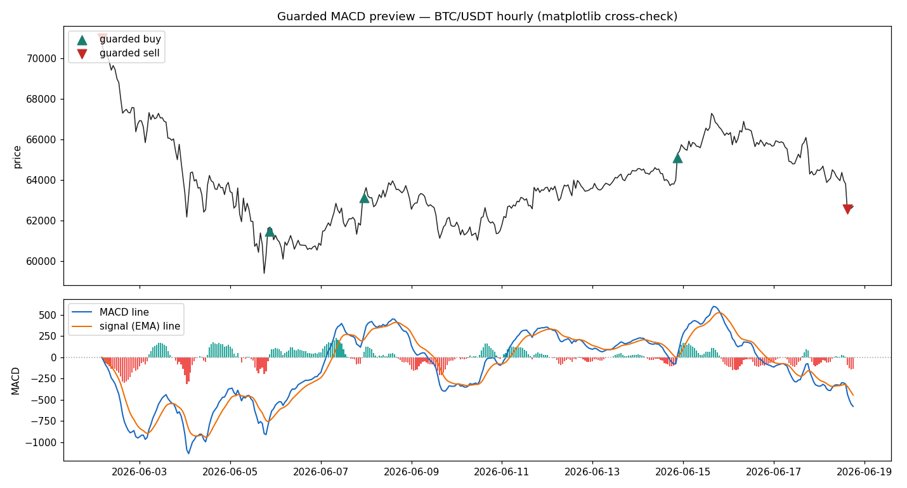
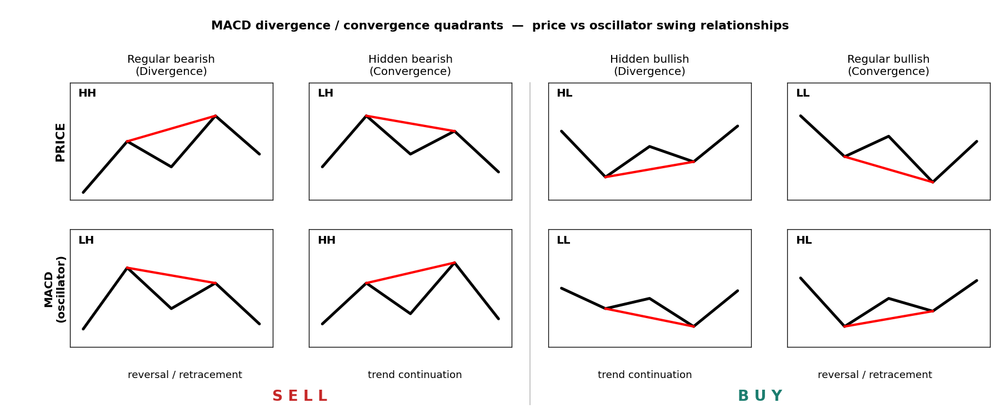
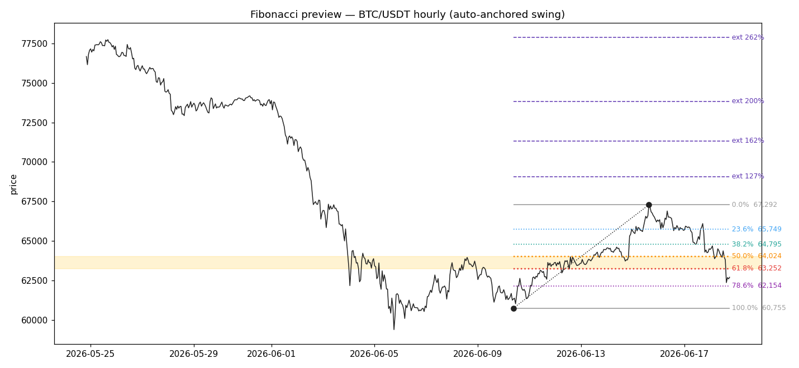
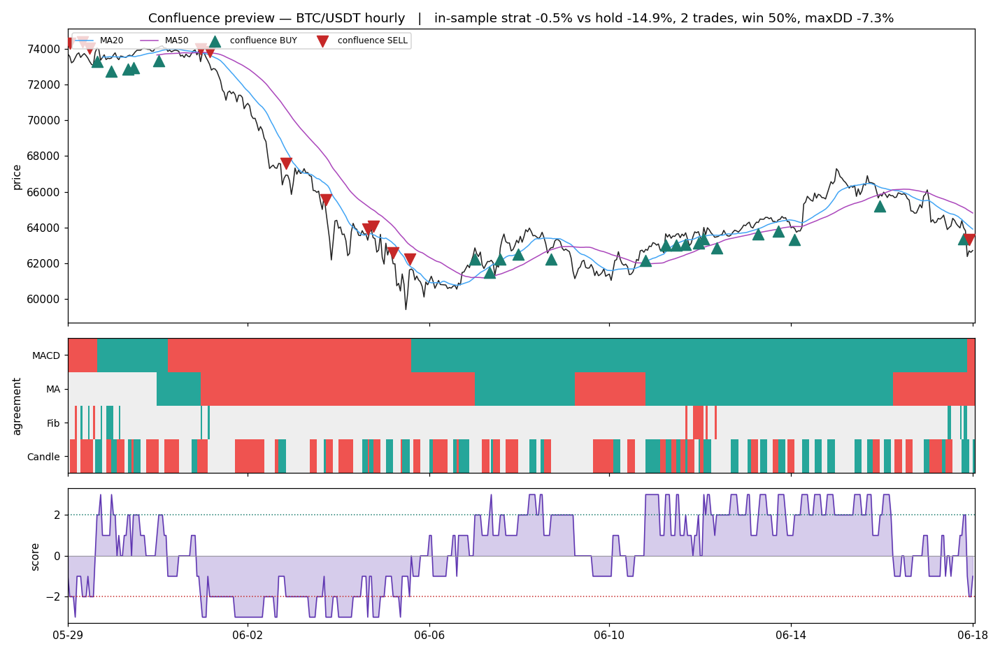

Day Trader Metrics | Controls | Operations
A read-only crypto market scanner. It pulls live public price data, computes a stack of technical indicators, ranks coins by a composite signal, and saves dated reports. It does not place trades. There are no API keys and no order routing; the live switch stays off by design.

Guarded MACD on BTC/USDT (hourly). Green triangles mark guarded buys, red mark guarded sells; the lower panel shows the MACD line, signal line, and histogram.
Table of Contents
Overview
The pipeline runs in four steps: pull recent candles for the most-traded USDT pairs via CCXT, compute per-coin indicators, score each coin with the Four Votes system against a buy/sell threshold, then rank entry and exit candidates and write a dated CSV to /outputs. The whole notebook is analysis, not execution. Interactive Plotly dashboards live alongside the static previews: the MACD dashboard, the Fibonacci dashboard, and the confluence dashboard open in any browser.
Environment Setup
Built for Python 3.11; the setup cell halts on any other kernel. Dependencies are pinned in inputs/requirements.txt and reinstalled on each fresh kernel, so no virtual environment is committed. The core libraries are ccxt (data), pandas-ta-classic (indicators), pykalman (smoothing), and plotly (charts). Run the setup cell once per session to rebuild the environment and configure graphics. No API keys are required, since only public market data is read.
Import Data
Live OHLCV candles are sourced from a chosen exchange. Five filters control the scan. The universe is the top TOP_N spot /USDT pairs ranked by quote volume; each extra symbol adds roughly a second.
| Parameter | Default | Meaning |
|---|---|---|
EXCHANGE |
binance |
Source exchange (105 supported by CCXT) |
SANDBOX |
False |
Testnet / fake money toggle |
TIMEFRAME |
1d |
Candle size (1m … 1w) |
LIMIT |
300 |
Candles pulled per coin (max 1000) |
TOP_N |
20 |
Most-traded pairs to scan |
Analyze Data
Each coin is scored on its latest candle against several lenses:
- Kalman filter smooths price noise and marks close-of-day strength.
- Bollinger Bands (14) show volatility; narrowing is quiet, flaring is volatile.
- Ichimoku spans (9, 26) map trend direction over the medium term.
- AMAT flags whether fast and slow averages are aligned (1 = trending).
- RSI gauges speed; above 70 is overbought, below 30 oversold.
- Choppiness separates clean trend (low) from inertia (high).
- Candle shapes detect doji, dragonfly, and gravestone reversal hints.
- MACD (12, 26, 9) tracks momentum through crossovers and histogram slope.
The base buy flag requires AMAT trending, EMA-14 above the Kalman mean, and the low above the Kalman mean. The sell flag is the mirror.
Rank Data
The engine runs over the universe into one table, skipping symbols too new to have full indicator history rather than hiding them. Buy candidates are sorted by trend strength and lowest RSI at the top; sell candidates are the mirror. The top name is charted with its Kalman and EMA-14 lines, and the table is saved as a dated CSV.
Performance Metrics
MACD Trends
MACD (Moving Average Convergence Divergence) tracks changing momentum: the speed of acceleration or decay in a price trend. Because the MACD line moves faster than the slow average, the two lines cross as the 12-EMA crosses the 26-EMA. A cross above the zero line signals a bullish turn, below signals bearish. Earlier crossovers offer more potential than the zero line but carry more false starts. The histogram beneath measures the gap between the lines: a growing histogram means accelerating momentum, a shrinking one means a likely turn. Divergence, the hardest read, compares the swing of price highs and lows against the matching MACD swings and is used mainly to protect a position before a change rather than to time a precise entry.
Divergence and Convergence Quadrants
The full taxonomy reads the last two price swings against the matching MACD swings, using the HH / HL / LH / LL pattern rather than the labels, since terminology is not standardised across sources.

The four price-versus-oscillator swing relationships. The left pair resolves to SELL, the right pair to BUY. Read the swing structure, not the label.
A single chart can show mixed signals, so weigh both the peak and trough series and never act on one line in isolation.
MACD in Crypto Markets
MACD is well respected in BTC and ETH markets but is never read alone. It pairs with position sizing and an expected stop. A useful crypto technique draws the trendline on the MACD itself, not only on price: in the May 2021 BTC top, price held a rising trendline while the MACD was already tracing a falling one, and the MACD trendline broke first. Faster timeframes update sooner (a 4h or 1h MACD moves quicker than a daily one), but the real limiter is volatility: the more violent the asset, the more its forecast leans on corroboration.
Corroborating Metrics
MACD reads momentum well but signals overbought and oversold poorly, so a crossover is confirmed against a second indicator and acted on only when both agree. Candidate partners include the Relative Vigor Index, Money Flow Index, TEMA, TRIX, the Awesome Oscillator, and a 20-period MA. The shared idea is the guardrail already built into the metric: never take a bare crossover. The Money Flow Index, with its volume gate, is the strongest candidate to add next.
Final Metrics
The current iteration defines cross_up and cross_down crossover points, plus guarded_buy and guarded_sell constraints that add a conservative noise band. Histogram variables (hist_slope, converging flags) flag early fades near zero, and bear_div / bull_div capture the divergence quadrants. MACD breaks and hidden divergence are not yet coded and are the next target. Overall strength is compiled from band clearances, slope spikes, the zero field, and divergence corroboration, with the swing series weighted most heavily.
Entry Points
Buy candidates are displayed first, with Kalman flags shown and the lowest RSI scores at the top.
Exit Points
Sell candidates mirror the entries: coins trending down with prices below the Kalman mean, weakest names at the top.
Four Votes
The composite decision is the Four Votes system. Each component casts +1 (buy), -1 (sell), or 0 (neutral):
- MACD holds a regime: a guarded crossover sets the stance and keeps it until the opposite guarded crossover flips it.
- MA crossover votes +1 when the 20-period SMA is above the 50, -1 below.
- Fibonacci is contextual: a pullback into the 0.5–0.618 golden pocket on a rising leg votes +1, a bounce into it on a falling leg votes -1, otherwise 0.
- Candles vote +1 on a bullish engulf, -1 on bearish, held live for a few bars.

Fibonacci levels auto-anchored to the latest swing on BTC/USDT (hourly). The shaded band is the 0.5–0.618 golden pocket; dotted lines mark retracement and extension levels.
A note on the candle vote: an earlier bug renamed a column by position and swapped the open and close prices, so the pattern read the wrong data. This version fixes that and uses the standard engulfing definition on the correct columns.
2-3 Rule Thresholds
Votes are summed into a weighted score, and a trade fires when the score first crosses the threshold:
score = w_macd*MACD + w_ma*MA + w_fib*Fib + w_candle*Candle (weights default 1)
BUY when score first reaches +threshold (default +2)
SELL when score first reaches -threshold (default -2)Two-point agreement is the standard rule; the stricter three-point version is used when a setup has fewer trades to learn from. The backtest only ever uses information available at the time, and a second buy signal while already holding does not open a new position, so the dashboard shows more markers than the backtest trades.

The confluence view: price with the 20- and 50-MA and buy/sell markers, a panel showing where MACD, MA, Fibonacci, and Candle votes agree, and the composite score against the +2 / -2 thresholds.
Honest Cynicism Check
An hourly backtest over ten coins (~41 days, 0.1% fee per side, long-flat, threshold 2) ran through a broad crypto downtrend.
| Coin | Strategy | Buy & Hold | Trades | Win % | Max DD |
|---|---|---|---|---|---|
| BTC | -1.4% | -21.3% | 4 | 50 | -7.3% |
| ETH | -9.2% | -26.1% | 5 | 20 | -16.1% |
| SOL | -19.8% | -22.1% | 6 | 33 | -36.9% |
| BNB | -0.9% | -9.9% | 5 | 40 | -6.7% |
| XRP | -6.3% | -17.9% | 4 | 50 | -15.5% |
| ADA | -16.9% | -38.2% | 5 | 20 | -22.0% |
| AVAX | -8.0% | -33.6% | 6 | 33 | -16.7% |
| LINK | -19.7% | -20.3% | 7 | 29 | -25.4% |
| LTC | -10.1% | -23.4% | 4 | 25 | -17.1% |
| DOGE | -9.2% | -22.6% | 3 | 33 | -15.1% |
| Mean | -10.1% | -23.5% |
Read plainly: the engine lost money on every coin but roughly half of what holding lost, because staying flat through the downtrend avoided the worst of it. That is drawdown reduction, not edge. Beating buy-and-hold by being absent during a fall does not survive into a rising or sideways market. Win rates of 20–50% confirm no demonstrated predictive skill yet.
Change of Heart
The earned next step is walk-forward validation: split each coin’s history into rolling train and test segments, choose the weights and threshold on train only, score once on the untouched test segment, and report only the out-of-sample, after-fees aggregate across bull, bear, and sideways regimes. Add a stop and a take-profit, since a flat-long rule with no risk control flatters drawdown. Real money is justified only if that result clearly beats both buy-and-hold and a coin flip; even then the operator owns the decision and the live switch stays off.
Decision Checklist
- Read balances (USDT, BTC, …).
- Size each trade as cash divided by the number of long candidates.
- Act on exits (bottom) before entries (top).
- Widen timelines and trend comparisons (all data saved and dated in
/outputs).
Regenerate the report in other formats from the repo root:
quarto render day-metrics.ipynb --to html --no-execute
quarto render day-metrics.ipynb --to docx --no-execute
quarto render day-metrics.ipynb --to pdf --no-execute